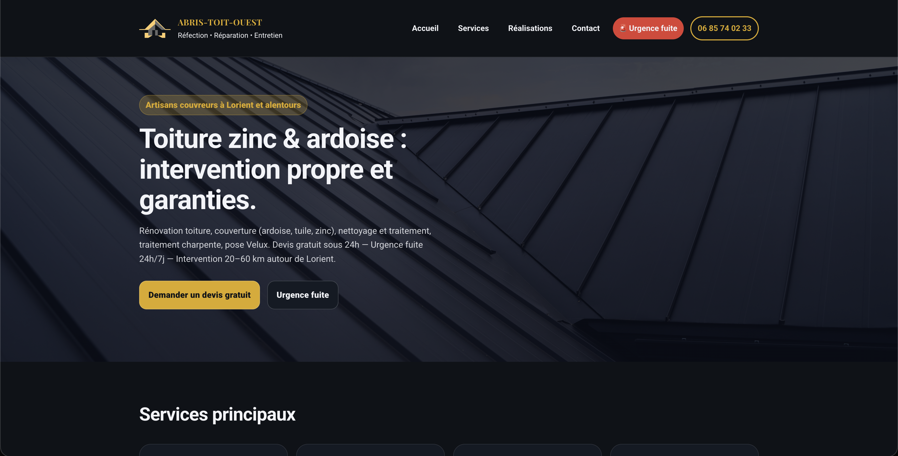

Abris-Toit-Ouest
Multi-page showcase website for a roofing french contractor: zinc and slate roofing, cleaning and waterproofing, timber treatment, and Velux installation. Documented before-and-after galleries and 24/7 emergency leak service.
View project